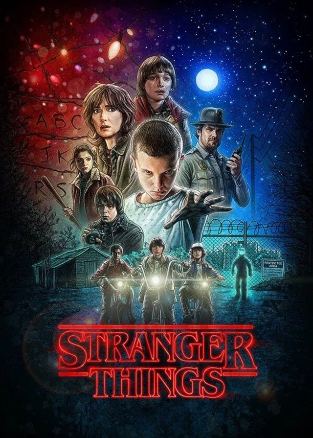

기묘한 이야기 시즌1
장르 : SF, 스릴러, 호러, 미스터리
공개일 : 2016년 7월 15일
기본정보 : 15세, NETFLIX
시놉시스 : 1983년, 인디애나주 호킨스에서 한 소년이 흔적도 없이 사라지자 가족과 친구들, 지역 경찰이 해답을 찾아 헤맨다. 그러던 중, 이들은 정부의 일급기밀 실험, 공포스러운 초자연적 존재와 미스터리의 소녀가 뒤얽힌 기이한 현상들에 휘말린다.
▪ 에피소드
| 회차 | 제목 | 러닝 타임 |
|---|---|---|
| 1화 | The Vanishing of Will Byers 윌 바이어스의 실종 |
48분 |
| 2화 | The Weirdo on Maple Street 메이플가의 이상한 아이 |
55분 |
| 3화 | Holly, Jolly 홀리, 졸리 |
52분 |
| 4화 | The Body 시체 |
50분 |
| 5화 | The Flea and the Acrobat 벼룩과 곡예사 |
53분 |
| 6화 | The Monster 괴물 |
46분 |
| 7화 | The Bathtub 욕조 |
42분 |
| 8화 | The Upside Down 뒤집힌 곳 |
54분 |